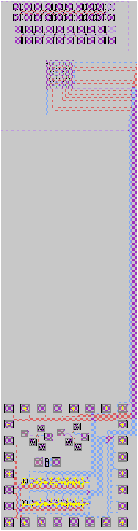
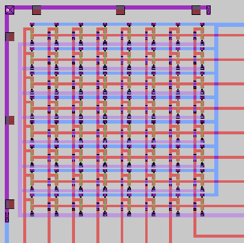
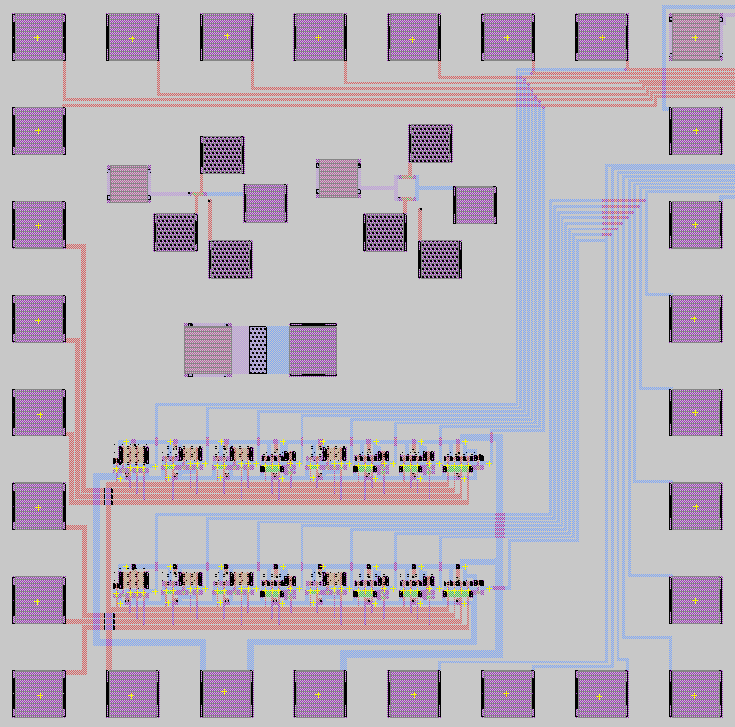

MICROFABRICATED ARRAYS OF THERMOCOUPLES
A. K. Henning, F. E. Kennedy, G. Dolan, D. Frusescu, T. Cook, L. Caballero, and J. J. Deacutis
Thayer School of Engineering, Dartmouth College
- There is a growing need for embedded sensors, particularly for 'smart maintenance' applications.
- Desirable parameters for sensing include temperature, pressure, flow, viscosity, acidity, and opacity.
- There is a particular need to determine when tribological coatings fail, or (better) are about to fail.
- Temperatures measured beneath thin film frictional coatings provide a signature for coating failure.
- Arrays of temperature sensors are beneficial for this application.
- Thermocouples are rugged temperature sensors, but large arrays of thermocouples create interconnection and signal access problems.
- This work uses MOSFETs as a means to reduce wire counts, and provide access to only desired locations, in arrays of thermocouples.

Figure 1: Overview of the array and access circuitry, to be fabricated using the BiCMOS process at the Stanford Nanofabrication Facility.

Figure 2: Close-up of the eight by eight array of thermocouple sensors.
Figure 3: Close-up of a single thermocouple sensor and its access transistor. The x- and y-addressing is accomplished using a dual-gate NMOS transistor. Only the thermocouple whose access transistor is fully ON will deliver an output signal.

Figure 4: Close-up of the x- and y-decoder circuitry.
Funding for this research project is provided by the Office of
Naval Research. Funding for fabrication is provided by NSF
through the National Nanofabrication Facility at Stanford University.